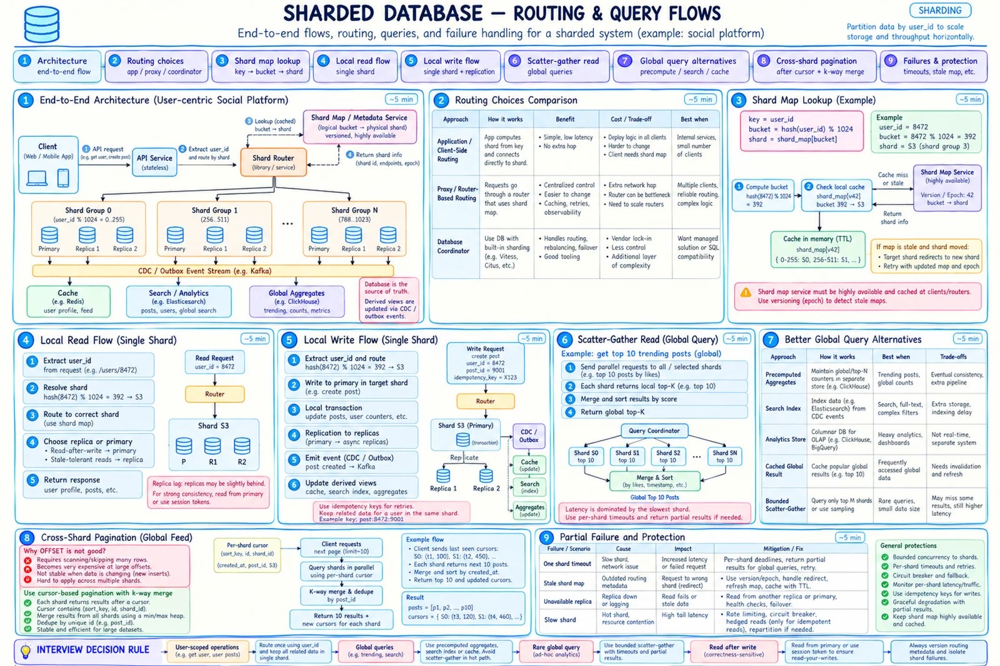

Topic · Sharding in Depth
Routing and Cross-Shard Operations
Find the shard, keep the common path local, and handle the rare cross-shard read, write, join, or global index on purpose.


Quick Revision
- Route: key → bucket → cached, versioned shard map → shard group.
- Stale client? Old owner returns
MOVEDwith the new epoch; retry with the same idempotency key. - Co-locate an aggregate root's data; the cheapest distributed transaction is the one you avoid.
- Frequent global queries → derived views (search, stream aggregation, OLAP), not live scatter-gather.
- Cross-shard writes: redesign → single owner → saga + outbox → 2PC last.
Routing
- App-side - lowest latency, scales with clients; duplicated logic, risky map rollouts.
- Router / proxy - central routing, retries, pools, metrics; extra hop and tier.
- Database-native - simpler app code; may hide expensive fan-out.
- Connections -
instances × shards × poolexplodes; use routers, lazy pools, caps.
user_id=8472 → bucket = hash(8472) % 4096 = 392 → epoch 43 → S3 stale client → S3 old owner: MOVED bucket=392 epoch=43 target=S3' → refresh map → retry
Locality and local flows
users, posts, user_settings, feed_metadata → shard by user_id posts local index (user_id, created_at DESC, post_id) following_by_user(user_id, followee_id) followers_by_user(user_id, follower_id) -- duplicated so both are local
- Global data - small reference data replicated everywhere or in a global store; large global views in search/OLAP/stream aggregates.
- Local read - extract key → bucket → map → primary (read-after-write) or replica → indexed query → cursor.
- Local write - route → local transaction with outbox row → commit → CDC updates cache, search, aggregates. Idempotency key on every retryable write.
Cross-shard reads
- Scatter-gather cost - latency of the slowest shard, failure odds grow with fan-out, total work grows with shard count.
- Better - trending → streamed top-K; search → CDC index; BI → OLAP; hot global list → cached versioned result; rare admin total → bounded fan-out with deadlines.
- Rare exact top-K - local top-K per shard, heap merge O(S × K log S), per-shard deadlines, completeness flag.
- Pagination - signed cursor with sort key, tie-breaker, per-shard cursors, map epoch; K-way merge + dedupe; no global
OFFSET.
Cross-shard writes, joins, indexes
- Redesign the boundary to co-locate.
- Single-owner state machine.
- Saga / workflow with compensations.
- Transactional outbox + idempotent consumers.
- Two-phase commit only when atomicity outweighs latency and availability.
Transfer saga: PENDING (idempotency key) → debit source → credit destination → COMPLETED; on failure release/compensate; reconcile stuck transfers
- Joins - co-locate, denormalize small projections, fetch IDs then hydrate in parallel, materialized views, offline joins.
- Local secondary index - per shard; queries need the key or fan out.
- Global secondary index -
email_hash → {user_id, shard}; its own distributed system (races, backfill, availability). - Global uniqueness - UUID/ULID/Snowflake,
(shard_id, local_id), range-leasing allocator, or uniqueness service. Local auto-increment isn't globally unique. - Foreign keys - enforce inside a shard; across shards use workflows, soft delete, reconciliation.
- Schema changes - expand/contract, canary a few shards, throttle, per-shard migration state.
Replication, partial failure, observability
- Every shard group - primary + replicas across zones; reads from primary, replica, session-consistent, or quorum.
- One shard down - fail closed for critical writes; partial results (
complete=false, missing shards) for analytics; fail only affected users; omit optional enrichment. - Protect - per-shard deadlines, jittered retries, circuit breakers, bulkheads, bounded concurrency, hedging only for idempotent reads.
- Backups - every shard + the shard map; per-shard PITR; regular restore drills.
- Managed - Cassandra (token ranges), DynamoDB (hash partitions), MongoDB (chunks), Vitess/Citus, distributed SQL - you still pick the key.
- Dashboard per shard - bytes, QPS, p99, CPU/IO/connections, replica lag, errors/redirects, top keys, cross-shard %, partial-result rate, epoch mismatches, migration lag, backup age. Alert vs absolute and fleet median.
Trade-offs
| Choice | Benefit | Cost / risk |
|---|---|---|
| App-side routing | Lowest hop | Duplicated config, many pools |
| Proxy routing | Central control and pooling | Extra hop and tier |
| Co-location | Local joins and ACID | Less perfect balance |
| Denormalization | Fast local reads | Write amplification, repair |
| Scatter-gather | Exact ad hoc global result | Tail latency, fan-out cost |
| Precomputed global view | Fast, stable | Eventual consistency, pipeline |
| Local secondary index | Simple, transactional | Needs key or fan-out |
| Global secondary index | Lookup by other attributes | Distributed consistency |
| Saga / outbox | Available, scalable | Eventual, compensation |
| Two-phase commit | Atomic multi-shard commit | Locks, latency, lower availability |
| Fail closed | Correct, complete | Lower availability |
| Partial results | Availability for analytics | Clients must handle completeness |
Failure modes
- Scatter-gather p99 spikes - deadlines, bounded fan-out, partial semantics, precompute.
- Pagination skips/duplicates - stable cursor, tie-breaker, per-shard cursors, K-way merge.
- Cross-shard joins flood the network - co-locate, denormalize, move joins to search/OLAP.
- Partial multi-shard write - saga, outbox, idempotent steps, compensation.
- Duplicate action after retry - idempotency key + queryable operation state.
- Shard map is a SPOF - replicate, cache, version, redirects.
- Stale router writes to old shard - epoch checks, MOVED, read-only old owner.
- Split-brain ownership - single authoritative epoch, fenced writes, consensus in control plane.
- Connection explosion - proxy, lazy pools, caps.
- One shard fails a global query - per-endpoint partial vs fail-closed contract.
- Stale replica read - primary/session read, min version/LSN.
- Failover loses writes - sync/quorum for critical writes, reconciliation, visible RPO.
- Schema drift across shards - per-shard state machine, canary, retries.
- Global uniqueness violated - uniqueness service or global IDs.
- Dangling references - workflow checks, soft delete, repair jobs.
- One shard missing from backups - per-shard backup alerts + shard-map backup.
Interview practice
Answer aloud, then reveal.
Microsoft SDE 2 (Apr 2026): distributed key-value store - sharding, replication, consistency, availability.
Hash key into buckets/token ranges; consistent hashing or versioned map; replicate across failure domains; explicit consistency (primary, quorum, eventual); online rebalance; detect hot partitions; repair/hinted handoff; per-partition metrics.
JPMorgan SDE 3 (Aug 2025): payment system with sharding and consistency.
Append-only ledger; shard by account owner; global payment IDs + lookup; cross-account transfer as durable state machine (reserve, idempotency, outbox, compensation, reconciliation), 2PC only if required; replicate shards; never shard only by time.
Paytm SDE 2 (Aug 2025): ClearTrip-like service - sharding, autoscaling, monitoring.
Search on a denormalized index; booking inventory owned by its partition; shard by ownership (provider/route/property/region + entity); reservation + idempotency at checkout; monitor QPS, p99, locks, storage, lag, hot routes.
Global top-K across shards?
Rare: local top-K + K-way merge. Frequent: precompute from an event stream into a global view.
Paginate across shards?
Cursor with per-shard cursors, sort key, immutable tie-breaker, map epoch; parallel query, merge, dedupe.
Globally unique username/email?
Dedicated uniqueness table/service with conditional insert storing owner and shard; idempotent signup; repair orphans. Never scan all shards.
Multi-shard money transfer?
Co-locate if possible; else state machine with reservation, idempotent steps, outbox, compensation, reconciliation; 2PC only when essential.
One slow shard during scatter-gather?
Per-shard and total deadlines, bounded parallelism; partial results for non-critical, fail closed for critical; isolate the shard.
Query without the shard key?
Global lookup/index, derived search/analytics, denormalized mapping, or bounded fan-out for rare cases. If it's common, revisit the key.
Schema change across hundreds of shards? Backups?
Expand/contract, canary, throttle, per-shard state. Back up every shard + map, per-shard PITR, global checkpoint for cross-shard workflows, restore drills.
Shard-map service is down?
Routers keep using the cached versioned map; migrations pause; shards redirect stale clients. The map service is replicated and backed up.